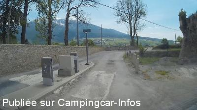
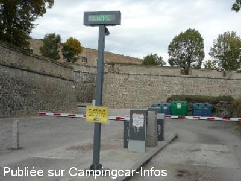
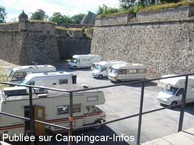
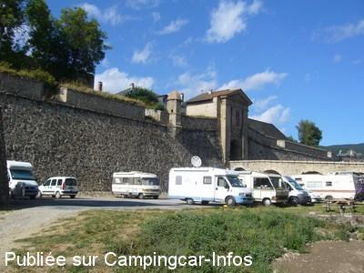
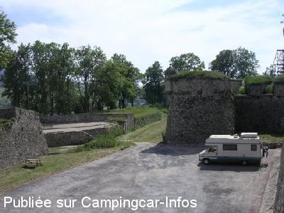

ASN = Aire de services avec stationnement nuit possible de :
MONT LOUIS
(N° 720)
Accès/adresse :
Parking des Remparts
66210 MONT LOUIS
66210 MONT LOUIS
Latitude : (Nord) 42.50778° Décimaux ou 42° 30′ 28′′
Longitude : (Est) 2.12278° Décimaux ou 2° 7′ 22′′
Tarif : 2016
Stationnement : 7 €
Services gratuits
Type de borne : Autre
Services :


Autres informations :
Tel Office du Tourisme : +33 (0)468 042 197
http://mont-louis.net/office.htm

Le 22/07/2014 par a&b

Le 01/11/2009 par ADADU

Le 27/08/2008 par didierlinares

Le 27/08/2008 par didierlinares

Le 22/08/2008 par bchariot
de
woody
le 22/11/2015 :
§ Barrières retirées. Prix indiqué 7.00€, mais gratuit en ce début octobre.
§ Barrières retirées. Prix indiqué 7.00€, mais gratuit en ce début octobre.
de
Christian
le 10/09/2015 :
Christian46
Bonjour
De passage le 08 09 2015 pour l aire trés bien
Mais triste spectacle pour le chemin d accés fortes déformations+trous inadmissile pour un site touristique!!!!
Christian46
Bonjour
De passage le 08 09 2015 pour l aire trés bien
Mais triste spectacle pour le chemin d accés fortes déformations+trous inadmissile pour un site touristique!!!!
de
CROUZEVIALLE
le 11/09/2014 :
§ Bonjour, bel emplacement pour visiter la ville. Prix 5€ la nuit, services gratuit. Merci à la municipalité.
§ Bonjour, bel emplacement pour visiter la ville. Prix 5€ la nuit, services gratuit. Merci à la municipalité.
de
a&b
le 22/07/2014 :
Dober dan!
Junij 2014 Ob obisku zapornice uničene. Brezplačno parkiranje in voda. Eksotika. Mora biti lepo.
Dober dan!
Junij 2014 Ob obisku zapornice uničene. Brezplačno parkiranje in voda. Eksotika. Mora biti lepo.
de
HARNOIS
le 07/10/2013 :
Superbe aire pour visiter ce village qui en vaut la peine. Merci à la commune.
Superbe aire pour visiter ce village qui en vaut la peine. Merci à la commune.
de
isatis
le 26/08/2012 :
§
Bjr.
Sommes passée ce mois-ci. Il n'y a plus de barriere ni bornes. Un employé municipal passe se faire régler les 4€ de nuitée sans oublier de vous renseigner sur tout ce qu'il y a voir ou faire.
Ne pas oublier la balade avec le train jaune. (gare à 20mn a pied (je marche mal).
Nb: les services sont gratuits.
§
Bjr.
Sommes passée ce mois-ci. Il n'y a plus de barriere ni bornes. Un employé municipal passe se faire régler les 4€ de nuitée sans oublier de vous renseigner sur tout ce qu'il y a voir ou faire.
Ne pas oublier la balade avec le train jaune. (gare à 20mn a pied (je marche mal).
Nb: les services sont gratuits.
de
LANSALOT
le 13/09/2011 :
Superbe aire merci à la municipalité.
Superbe aire merci à la municipalité.
de
urquiri
le 16/08/2011 :
nous sommes passé le 15/08 rien à dire belle aire bien place pour visiter le coin .30 minutes gratuite pour vidanger et faire le plein et 4 euros la nuit .
que du bonheur meme le 15 aout il restait des places capacite environ 20 cc
nous sommes passé le 15/08 rien à dire belle aire bien place pour visiter le coin .30 minutes gratuite pour vidanger et faire le plein et 4 euros la nuit .
que du bonheur meme le 15 aout il restait des places capacite environ 20 cc
de
kezako53
le 10/10/2010 :
Bonjour. Nous sommes arrivés à MONT LOUIS, les barrières du parking étaient relevées, pas de possibilité d'avoir un ticket. Très calme et à l'abri du vent au pied des remparts. Spécialités catalanes excellentes à la boulangerie. Le lendemain matin, barrières baissées, sans ticket dur de sortir. Heureusement, grace à l'interphone de la borne nous avons pu avoir l'office de tourisme qui nous a ouvert. Encore merci. A recommander.
Bonjour. Nous sommes arrivés à MONT LOUIS, les barrières du parking étaient relevées, pas de possibilité d'avoir un ticket. Très calme et à l'abri du vent au pied des remparts. Spécialités catalanes excellentes à la boulangerie. Le lendemain matin, barrières baissées, sans ticket dur de sortir. Heureusement, grace à l'interphone de la borne nous avons pu avoir l'office de tourisme qui nous a ouvert. Encore merci. A recommander.
de
Michel Cointre
le 06/05/2010 :
La 1ère demie-heure est gratuite, ce qui permet largement de faire les eaux en itinérant. Une autre aire intéressante se situe à quelques km à la station de ski des Angles: grande aire à 1800m d'altitude et service des eaux gratuit.
La 1ère demie-heure est gratuite, ce qui permet largement de faire les eaux en itinérant. Une autre aire intéressante se situe à quelques km à la station de ski des Angles: grande aire à 1800m d'altitude et service des eaux gratuit.
de
Papy 03
le 04/05/2010 :
Aire calme, propre, site agréable, 4€ de 18 heures à 10 heures le lendemain, services compris. Ville de Mont-Louis magnifique. A recommander. §
Aire calme, propre, site agréable, 4€ de 18 heures à 10 heures le lendemain, services compris. Ville de Mont-Louis magnifique. A recommander. §
de
Emmanuel
le 27/04/2008 :
Rien de mieux pour visiter la vieille ville, l'aire est très calme la nuit et bien sécurisée, l'eau et l'électricité y sont à volonté, tout étant compris dans le forfait qui est prélevé par l'agent de la mairie #####. En conclusion, une bonne halte.
Rien de mieux pour visiter la vieille ville, l'aire est très calme la nuit et bien sécurisée, l'eau et l'électricité y sont à volonté, tout étant compris dans le forfait qui est prélevé par l'agent de la mairie #####. En conclusion, une bonne halte.